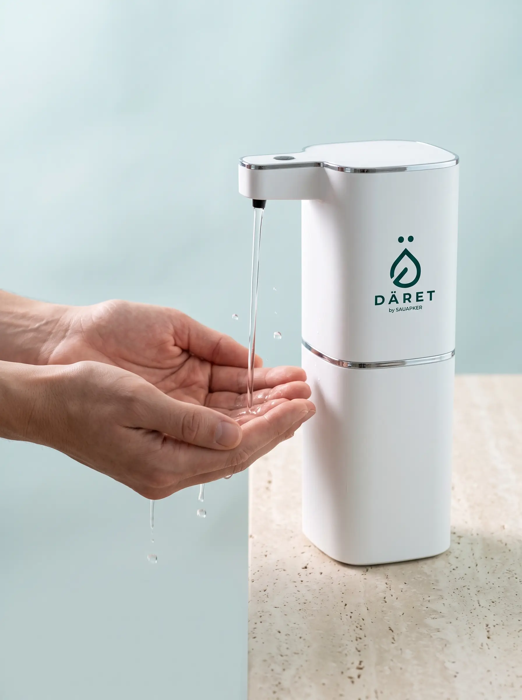
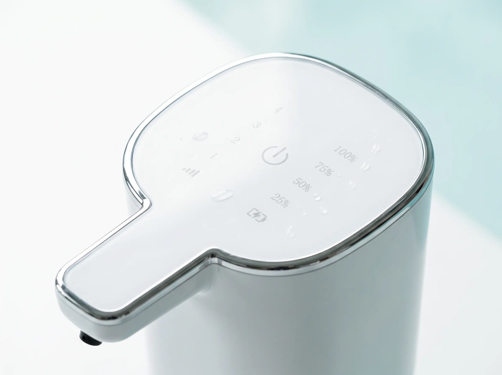
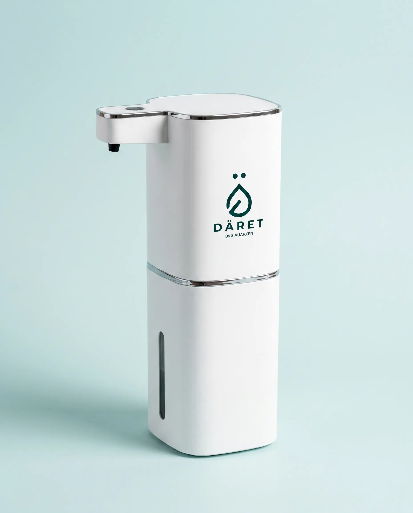
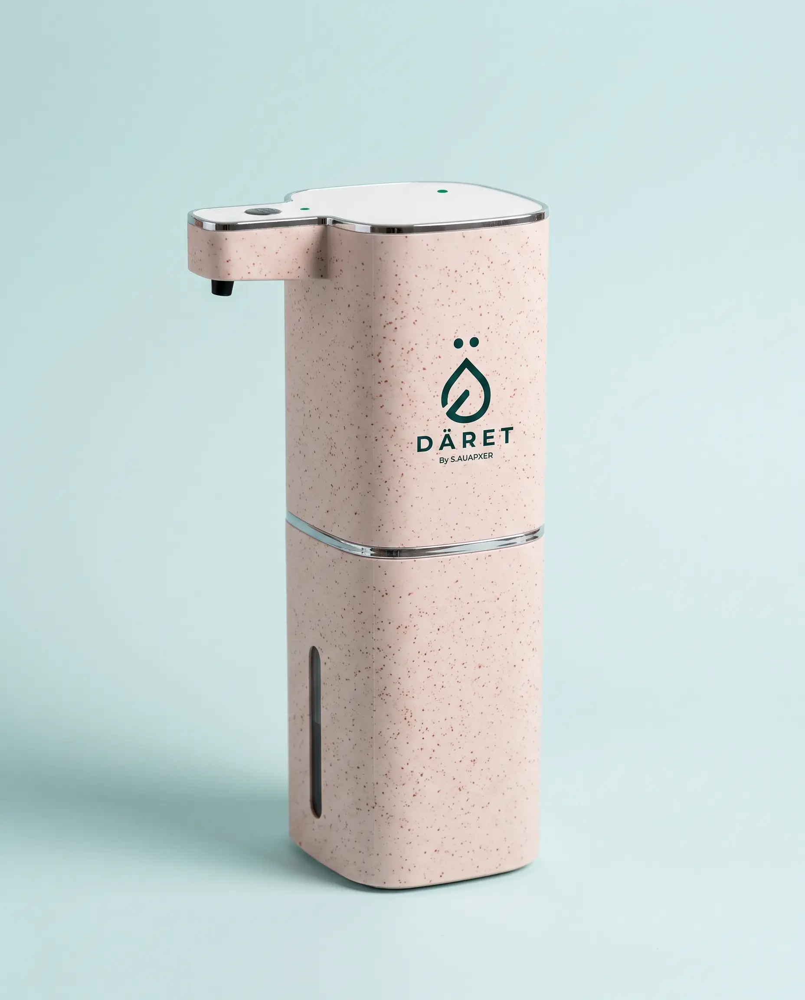
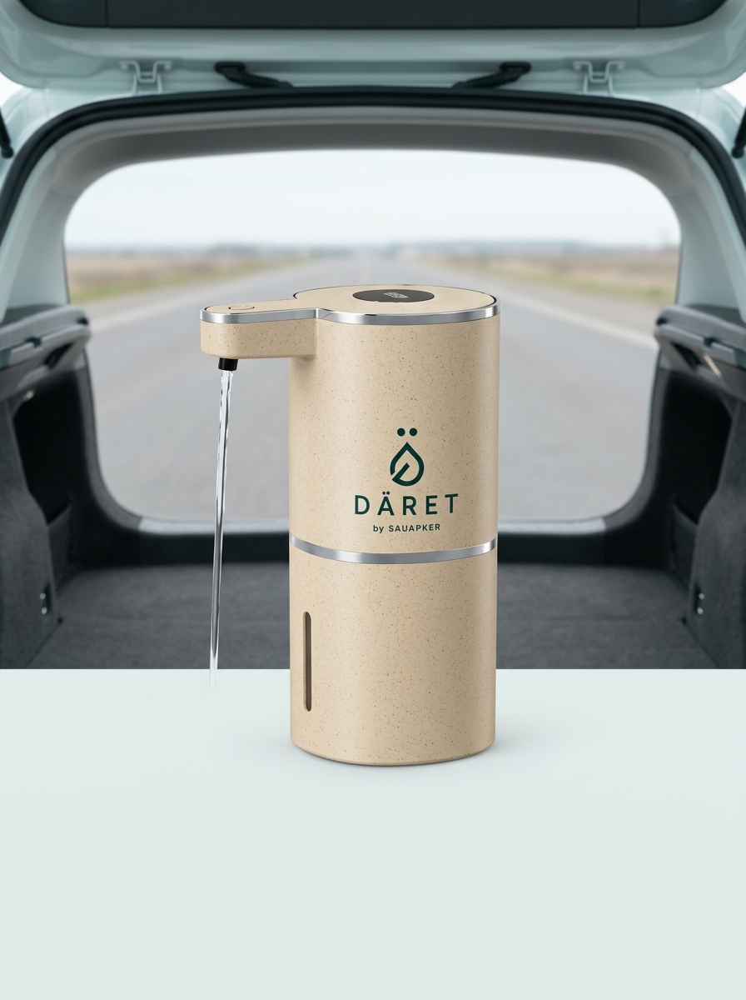
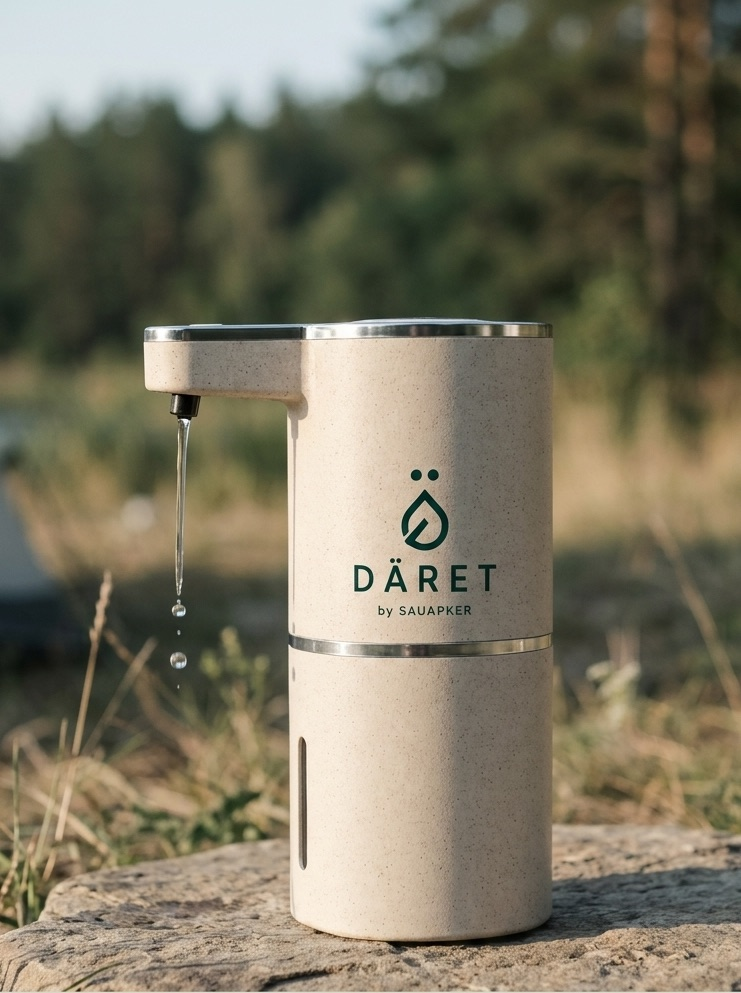
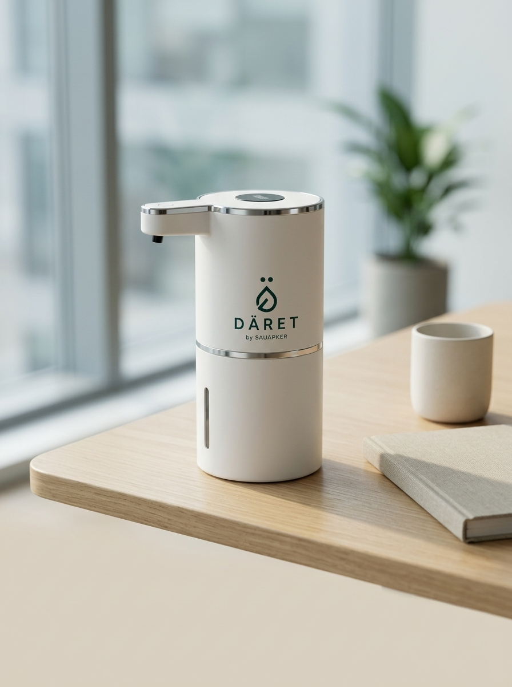
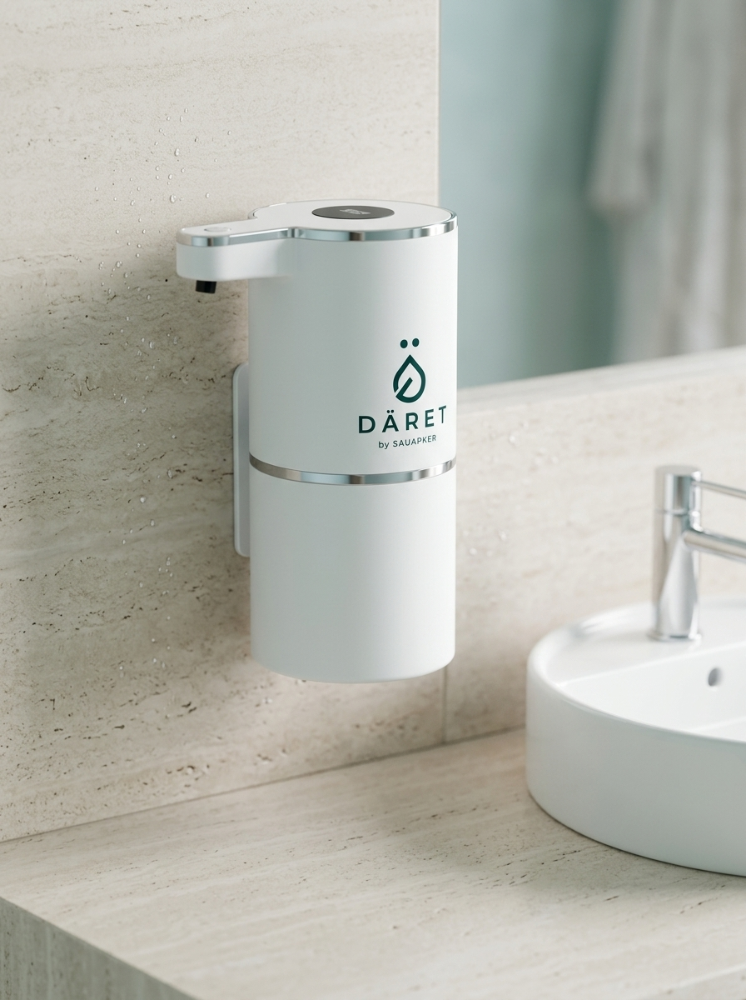

DÄRET by SAUAPKER
«DÄRET — омовение всегда рядом»
Портативное устройство для совершения омовения перед намазом. Возьмите DÄRET с собой — в дорогу, на работу, в машину или на природу.
لَا تُسْرِفْ فِي الْمَاءِ وَإِنْ كُنْتَ عَلَى نَهْرٍ جَارٍ
«Не расходуй воду сверх меры, даже если ты совершаешь омовение у текущей реки».Ибн Маджа, 425
Почему DÄRET
Омовение без компромиссов
Омовение должно быть простым, аккуратным и комфортным — независимо от того, где вы находитесь.
Продуманная подача воды
Удобная конструкция позволяет контролировать поток одной рукой и направлять воду именно туда, куда необходимо. Без лишних движений и потерь воды.
Рациональный расход воды
Вода подаётся дозированно, поэтому её расход остаётся минимальным. Вы используете ровно столько воды, сколько необходимо для омовения.
Всегда под рукой
Компактный формат позволяет взять устройство с собой в мечеть, автомобиль, офис или поездку. Для омовения больше не требуется искать подходящий кран или умывальник.
Комфорт в каждом использовании
Никаких мокрых поверхностей, неудобных положений бутылки или необходимости постоянно открывать и закрывать кран. Всё необходимое для омовения — в одном продуманном устройстве.
Как это работает
Четыре простых шага — и устройство готово к омовению
Наполните резервуар
Залейте до 420 мл чистой воды. Крышка легко снимается для быстрого наполнения.
Установите устройство
Разместите его на раковине, полке, столе или другой подходящей поверхности. Для стационарного размещения предусмотрено крепление на клейкой основе.
Поднесите руки к датчику
Инфракрасный датчик реагирует на движение рук на расстоянии до 6 см с откликом 0,25 секунды. Вода подаётся автоматически ровным потоком.
Уберите руки — подача прекращается
Как только руки отведены от датчика, подача воды останавливается. Это позволяет контролировать расход воды и поддерживать аккуратность во время омовения.

Панель
Сенсорное управление на крышке
Режимы подачи и индикация заряда — на одной сенсорной панели. Мягкая подсветка на корпусе показывает, что устройство готово к работе.
- Отклик датчика
- 0,25 с
- Дистанция срабатывания
- до 60 мм
- Защита от брызг
- IPX5
- Питание
- USB-C, DC-5V, 1,5 Вт

Исполнения
Два цвета — один универсальный дизайн
Минималистичный корпус гармонично вписывается в современный интерьер и остаётся уместным в любом пространстве. Два сдержанных цветовых решения позволяют выбрать вариант под свой стиль.

Pure White
Матовый белый. Нейтральный, спокойный, подходит к любой ванной.

Wheat Straw
Тёплый биокомпозит с пшеничной соломой и фактурной поверхностью.
Где им пользуются
Намаз не ждёт удобного места




Характеристики
Всё, что нужно знать
В комплекте: дозатор DÄRET, кабель USB-C, клейкое настенное крепление, инструкция.
- Объём резервуара
- 420 мл
- Габариты
- 210 × 75 мм
- Вес
- 293 г
- Питание
- DC-5V, USB-C
- Потребление
- 1,5 Вт
- Датчик
- 0–60 мм, 0,25 с
- Управление
- Сенсор на крышке
- Влагозащита
- IPX5
- Рабочая температура
- 5–45 °C
- Влажность
- 0–85 %
- Материал
- Биокомпозит / ABS
- Цвета
- Pure White, Wheat Straw
Отзывы
Что говорят покупатели
[Место для реального отзыва покупателя — 2–3 предложения о том, где и как он пользуется DÄRET.]
[Место для реального отзыва — например, о поездках и намазе в дороге.]
[Место для реального отзыва — например, о подарке родителям.]
Блок подготовлен под настоящие отзывы. Замените текст и имена на реальные — придуманные отзывы публиковать нельзя.
Вопросы
Коротко о главном
Хватает ли 420 мл на полное омовение?
Да. Резервуар рассчитан именно на полное омовение: вода подаётся дозированно и только тогда, когда под датчиком есть руки, поэтому расход почти вдвое ниже, чем при открытом кране.
Допустимо ли омовение из такого дозатора?
DÄRET — это способ подачи чистой воды, как ковш или кран. Требования к омовению касаются чистоты воды и последовательности действий, а не устройства подачи. По индивидуальным вопросам лучше обратиться к своему имаму.
Насколько хватает заряда?
Устройство потребляет 1,5 Вт и заряжается от обычного USB-C — от того же адаптера или павербанка, что и телефон. При ежедневном использовании заряжать нужно редко.
Что входит в комплект?
Дозатор DÄRET, кабель USB-C, клейкое настенное крепление и инструкция. Крепление позволяет закрепить устройство рядом с раковиной без сверления.
Можно ли брать его в самолёт?
Да — вес 293 г и высота 21 см. Перед досмотром резервуар нужно опорожнить, как и любую ёмкость для жидкости в ручной клади.
Как оформить заказ и доставку?
Оставьте заявку в форме ниже или напишите на info@sauapker.kz — мы свяжемся, уточним цвет, количество и способ доставки.
Заказ
Оставьте заявку
Напишите имя и телефон — мы свяжемся, подтвердим наличие цвета и рассчитаем доставку.
- Официальная гарантия
- Бренд SAUAPKER
- Доставка по Казахстану
- Уточняем при заказе
- Подарочная упаковка
- Минималистичная коробка